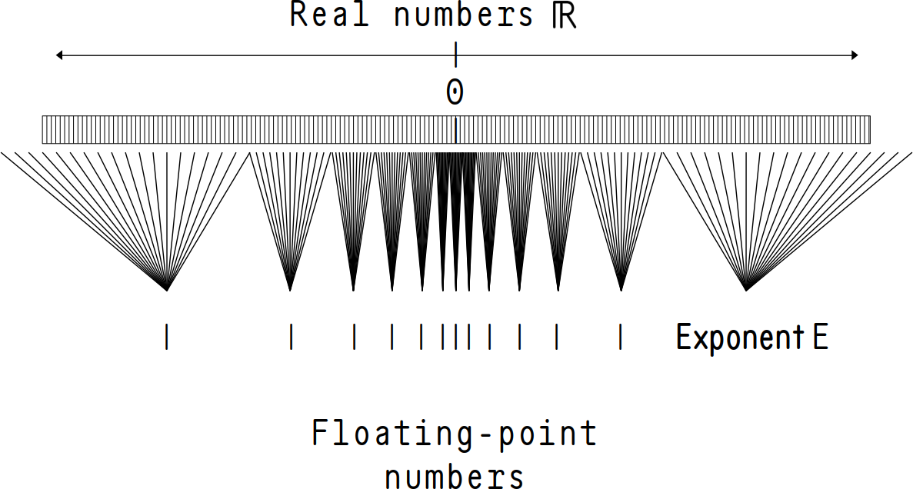

Floating-point calculations are critical to a number of special domains in modern computing, including machine learning, graphics, and scientific computing. Numerical calculations are particularly susceptible to opaque and system-local optimizations, which can break certain guarantees for deterministic computers. We consider the background and implementation of IEEE 754 floating-point arithmetic and options for implementing mathematics compatibly with fully reproducible and portable computing. We consider hardware-based and software-based proposals.
Floating-point operations are a technically complex subject and the extent to which developers or source code alter or test this information will depend on many factors. Apart from the general exhortation to developers to be careful and to make sure they know what they are doing, there is little of practical use that can be recommended. ( Jones, 2008, p. 197)
Modern digital computers deal, at their root, in binary representation, entirely zeros and ones.1 These are often formally considered to be whole numbers in a number base of two. However, numerical calculations very frequently require the use of numbers with a fractional part to adequately represent the elements of a computation.
Early numeric computing tended to focus on problems of interest to military and national security applications, such as partial differential equations and numerical optimization. Such calculations typically involve arrays, and linear algebra was elaborated hand-in-hand with digital computing techniques in software and hardware. Numerics assumed prominence for a wider audience with the rise of gaming on personal computers, although these algorithms emphasized speed over exactness.2 To this point in the history of computing, most software either ran on a single platform for its lifetime (as with supercomputing) or did not require portably deterministic algorithms (as with gaming).3
On the other hand, deterministic computing describes the ability for a given computation be reproducible exactly. Such reproducibility permits referential transparency and more powerful reasoning about a program’s results and dependencies. This includes, for Urbit as a state machine, that the event log replay be portable across platforms to yield the same result. Conceptual guarantees must be backstopped by actual implementation guarantees for determinism to hold.
Binary computer values are at root easily represented as non-negative integers. However, it is frequently convenient when working with human applications to either use other numeric bases (notably decimal and hexadecimal) or to permit non-integer mathematics.
In the historical development of mathematics, logical problems in each set of numbers drove the discovery and elaboration of more elaborate algebras. For instance, in the field of natural numbers , the operation of addition () or multiplication () produces a value within the set; however, permitting subtraction () of a larger number from a smaller number can result in a value inexpressible in . This motivated the introduction of the integers , augmenting the numbers from zero to (positive) infinity with the negative numbers. Division () similarly produced a crisis when applied to values which did not have a whole-number ratio between them, a situation resolved by the Pythagorean4 innovation of the rational numbers or fractions as a class . Ultimately, the common reference set for engineering mathematics (and the human understanding of the continuum such as measurement) is the set of real numbers. The set of real numbers, denoted by , is characterized by its continuity, implying that for any two distinct values within this set, there exists a difference, no matter how small.
Since the operations and conventions of have been found to be so useful, it is desirable to extend the semantics to computer programming. However, digital computers, by virtue of their binary representation, effectively use natural numbers to represent numbers (to the limit of memory rather than positive infinity ). Several schemes permit a computer integer to be interpreted as if it were a number with a fractional part, including a scaling factor, fixed-point representation,5 and floating-point representations.
The basic concept of floating point arithmetic is that it permits the representation of a discrete subset of by composing a significand, a base, and an exponent. The significand is the set of significant digits, possibly including the sign; the base is the understood number base (typically 2); and the exponent is the power to which that base is put before multiplying by the significand to yield the result.6 The most ubiquitous floating-point format in use today is defined by the IEEE 754 standard, but certain hardware platforms such as GPUs utilize alternative floating-point arithmetic representations.7
To summarize, given an abstract description of a floating point system, there are several practical implementations that can be derived. We need to specify at least four quantities: sign,8 significand, base, and exponent.9 The base is presumably fixed by the protocol, leaving three free values for the implementation to economically encode.
Early computer systems with floating-point units chose bespoke but incompatible representations, ultimately leading to the IEEE 754 (primarily architected by William Kahan). IEEE 754 reconciled considerations from many floating-point implementations across hardware manufacturers into an internally consistent set of fixed-width representations.10 For instance, the 32-bit “single precision” C float/Fortran REAL*4 specification denotes particular bit positions as meaningful,
SEEE.EEEE.EFFF.FFFF.FFFF.FFFF.FFFF.FFFF
where S is the sign bit, 0 for positive () and 1 for negative (); E is the exponent in base-2 (8 bits); and F is the significand (23 bits). The exponent is actually calculated at an offset bias of 127 () so that a more expressive range of orders of magnitude can be covered. The significand has an implied leading 1 bit unless all are zero. To wit,
IEEE 754 specifies operations between numbers, including of different magnitudes. The standard dictates behavior and provides outlines for arithmetic, but leaves algorithmic details to the implementation. Numbers are normalized by adjusting the exponent of the smaller operand and aligning the significands, then the operations are carried out. In practice, extended precision values are used in the intermediate steps of many algorithms, leading to greater accuracy than would otherwise be expected.11
Since the IEEE 754 floating-point format packs values of different kind together bitwise, conventional integer operations such as left shift («) and addition (+) do not trivially apply.12
Floating-point addition (add) proceeds per the following algorithm:
Compare exponents of the two numbers. Shift the smaller number rightwards until its exponent matches the larger exponent.
Add the significands together.
Normalize the sum by either shifting right and incrementing the exponent, or shifting left and decrementing the exponent.
If an overflow or an underflow occurs, yield an exception.
Round the significand to the appropriate number of bits.
Renormalize as necessary (back to step 3).
IEEE 754 floating-point arithmetic and its predecessors have some significant mathematical compromises even in its formal specification.13 For instance, as a result of the discrete nature of the bitwise representation in E and F, floating-point mathematics are actually a subset of discrete mathematics masquerading as real mathematics. This has non-trivial consequences for certain aspects of calculations, including error accrual. In particular, three facts dominate the resolution:
The distance between two adjacent values changes based on the magnitude of the exponent and the distance from zero. (The significand resolution stays the same but the exponent changes.)
There is a relative approximation error for a given bitwidth in IEEE 754, called the machine epsilon.14
Operations between numbers of different magnitudes are particularly affected by their relative numerical horizon.
Variable precision and truncation error. For most values of the exponent E, the difference between two discrete values is determined by the absolute magnitude of the significand S. The difference between serial values is
This is multipled by the the result of the exponent E and the bias, meaning that for each exponent value the difference between subsequent values changes. (Figure 1 represents this schematically.)

However, for normalized numbers, or numbers that are left-shifted or right-shifted in order to carry out a calculation, values are determined by the relative shift in exponent . For , for instance, the difference between serial values is . This variable precision means that the precision of floating-point values varies across the range of representable numbers when operations take place. Operations between two numbers of fairly different precisions are particularly vulnerable to accuracy loss, although some numerical techniques can be employed to mitigate.
Truncation error results from terminating repeating “binaries” (by analogy with “decimals”). Just as has a finite precision when written in base-10, numbers that are not precise powers of two result in repeating fractions. These necessarily terminate at the resolution of the significand. The number and nature of truncation and rounding can significantly affect the accuracy of floating-point arithmetic and algorithms ( Izquierdo and Polhill, 2006).
Machine epsilon. The machine epsilon, or smallest value discernable from 1.0, is determined by the precision of the floating-point representation. The machine epsilon for a particular bit width is determined by setting two to the negative power of the number of bits used for the magnitude of the mantissa and accounting for the leading implicit bit 1; for 32-bit single-precision float this is . Differences from 1.0 smaller than this cannot be represented in this bit width.
Sequence ordering. In situations in which floating-point operations may occur in different orders, even the basic guarantee of communitativity breaks. For instance, in 64-bit FP arithmetic, the following holds true (example in Python):
In [1]: (1.1-0.3)-0.8 Out[1]: 0.0 In [2]: (1.1-0.8)-0.3 5Out[2]: 5.551115123125783e-17
This occurs since operations of different magnitude can affect the resulting significand, a sort of horizon of resolution leading to differences in the outcome. Sequence order can be changed (and thus commutativity broken) as a result of many common programmer design patterns, including compiler optimizations, race conditions, and parallelization.
Another problem in numerical analysis, error accrual is likewise due to the horizon of resolution. The accrual of error due to summing sequences of numbers (whether in parallel or serially) occurs in the summation of sequences of numbers since the error term can grow as . Kahan–Babuška compensated summation can be used to track a separate error term (de facto extending the precision during the operations) and adding it back in to the sum before yielding the final result ( Babuška, 1969 ; Kahan, 1965).
Formally neither associative nor commutative for the above reasons, floating-point arithmetic can break our mathematical intuitions in interesting ways. However, this is a consistent and well-understood phenomenon. For our purposes as designers of deterministic computers, the most damning indictment has to do not with IEEE 754 itself but with manufacturer deviation in hardware implementation. In 1997, William Kahan himself complained (justly) about the compromises inherent in the standard for compiler implementers:
Most computer linguists find floating-point arithmetic too disruptive [due to] [t]heir predilection for “referential transparency” …. Computer linguists also dislike functions with side-effects and functions affected by implicit variables not explicit in argument lists. But floating-point operations can raise IEEE 754 exception flags as side-effects, and operations are affected implicitly by exception-handling and rounding modes eligible at run-time according to IEEE 754. Alas, that standard omitted to bind flags and modes to locutions in standard programming languages, and this omission grants computer linguists a licence for inaction. ( Kahan, 1997a)
There are several sources of trouble for even single-threaded deterministic computation using hardware IEEE 754 floating-point units (FPUs):15
Optional, discretionary, or advisory aspects.
Gaps or omissions in the specification.
Failure to implement the specification exactly.
Out-of-sequence computations.
Optional aspects. Several aspects of IEEE 754 are optional or advisory, including:
Exception handling means that the hardware may specify rounding via an overflow flag.
Extended precisions formats are not a huge deal to leave out, but extended precision arithmetic (used for intermediate results) can materially change results.
Subnormals are optional;16 some platforms may flush them to zero or (worse) allow subnormal support to be disabled in certain cases.17
Omissions. Whether something is a gap or optional is something of a philosophical question for us, but some parts are underspecified in a way that makes portability impossible. E.g., mixed-precision operations can yield unpredictable results depending on the compiler and hardware. This is a function of rounding modes, precision loss, precision of intermediate results, and the presence or absence of dedicated hardware support for certain precision combinations.
Inexact implementation. Failure to implement IEEE 754 correctly may happen inadvertently, as with the Pentium FDIV bug in the 1990s ( Edelman, 1997). Alternatively, chipset designers may deviate from the specification for reasons of performance or limitations in the architecture.
For instance, IEEE 754 defines a range of numbers as “not-a-number” values, or NaNs. Per the specification, a NaN can be a signalling NaN, meaning that it intends to flag and possibly disrupt a problematic computation;18 or a quiet NaN, which does not raise such an exception and merely yields a result with the NaN propagated to the final result.19 Not all processors implement this part of IEEE 754 correctly: “The Motorola DSP563CCC does not support NaNs or infinities. Floating-point arithmetic operations do not overflow to infinity; they saturate at the maximum representable value” (Jones, 2008, p. 338).
As a further example, fused multiply-add (FMA) () is implemented on certain hardware to favor double operations and not quadruple-precision operations ( Kahan, 1997a, p. 5).
Out-of-sequence computations. A modern compiler using optimization flags or even modest parallelism can easily cause a floating-point calculation to rely on operands that were produced in an order different than that specified in the code. This is largely opaque to the programmer, aside from some simple heuristics, and makes it difficult to reproduce or reason about the fine details of computations.
As demonstrated above, out-of-sequence or resequenced computations can affect results due to rounding behavior and the “numerical horizon” which results between values. These can happen due to multithreaded computation or an optimizing compiler.
Rounding mode. IEEE 754 floating-point operations take place using one of four rounding modes.
Round to nearest, ties to even. Set ties to the last bit as zero (even). The default.
Round to zero. Truncate, effectively rounding positive numbers down and negative numbers up.
Round toward positive infinity. Up regardless of sign.
Round toward negative infinity. Down regardless of sign.
The rounding mode can affect the result of computations, and if other processes are changing the mode (which can even be set per-thread), results may not be reliably reproducible.
“Obtaining the correctly rounded result of an addition or subtraction operation requires an additional bit in the significand (as provided by the IEC 60559 guard bit) to hold the intermediate result” ( Jones, 2008, p. 65).
Urbit implements a subset of IEEE 754 functionality in
/sys/hoon, the Hoon language specification. The Nock
operations formally take place on integers. In practice,
we could imagine several ways of implementing such
operations: bitmasking the integers or breaking them
apart into three components, for instance. We take
Urbit’s implementation of @rs (single-precision float) as
representative.20
++rs is a wrapper core to instrument arithmetic arms like
++add using the ++ff floating-point functionality core.
Ultimately this resolves to breaking out the components (sign,
exponent, and significand) into separate numbers for the actual
operation.21
The ++fn core offers a generalized interface for a superset
of IEEE 754-style floating-point implementations, permitting
bit width, precision, bias, and rounding mode to be freely
specified.22
The actual implementation on +$fn-typed values is rather
dense and features numerous rounding and overflow checks:
++ add |= [a=[e=@s a=@u] b=[e=@s a=@u] e=?] ^- fn =+ q=(dif:si e.a e.b) |- ?. (syn:si q) $(b a, a b, q +(q)) 5 ?: e [%f & e.b (^add (lsh [0 (abs:si q)] a.a) a.b)] =+ [ma=(met 0 a.a) mb=(met 0 a.b)] =+ ^= w %+ dif:si e.a %- sun:si ?: (gth prc ma) (^sub prc ma) 0 10 =+ ^= x %+ sum:si e.b (sun:si mb) ?: =((cmp:si w x) --1) ?- r %z (lug %fl a &) %d (lug %fl a &) %a (lug %lg a &) %u (lug %lg a &) 15 %n (lug %na a &) == (rou [e.b (^add (lsh [0 (abs:si q)] a.a) a.b)])
There is, of course, a feint in the foregoing discussion. Nock is a virtual machine specification, and in practice operations that would benefit from more direct expression in C are jetted.23 Thus the actual call in this case will correspond to some C code using the SoftFloat library:24
u3_noun u3qet_add(u3_atom a, u3_atom b, u3_atom r) { union sing c, d, e; // set IEEE 754 rounding mode _set_rounding(r); 5 // unwrap nouns into C-typed values c.c = u3r_word(0, a); d.c = u3r_word(0, b); // perform addition and unify NaN e.s = _nan_unify(f32_add(c.s, d.s)); 10 // wrap C value back into noun return u3i_words(1, &e.c); }
Why SoftFloat? Enter, stage left, the problem of platform-portable determinism.
Non-real arithmetic is less significant for many of the core operations of Urbit as a personal server platform. However, gaming, machine learning, graphics, and other applications rely on floating-point calculations—preferably as fast as possible. In fact, not only applications-oriented processes rely on determinism: guarantees in cryptography and contractual correctness for web3; verification and validation; accounting and legal compliance; and code correctness analysis all require reproducible determinism.25
Why can’t we just allow different results in the last binary places of the significand? Philosophically, Urbit holds the following statements as bedrock truth ( Monk, 2020a):
A10. Correctness is more important than performance.
A12. Correctness is more important than optimality.
A14. Deterministic beats heuristic.
F1. If it’s not deterministic, it isn’t real.
Urbit makes much of avoiding the “ball of mud” “standard software architecture” ( Foote and Yoder, 1999). In this design anti-pattern, a lack of guarantees and predictable behavior leads inevitably to haphazard and illegible software bloat (ibid.). We can thus understand why Urbit as a platform considers even deviations in the last bit of a significand to be threads fraying the edge of sanity Monk (2020b):
If you do the same thing twice, your computer should react the same way. This is comforting. This is also what makes it easy to reason about and use effectively. If you’re not sure what your computer will do, you’ll be afraid of it and act defensively toward it. This inevitably leads to a big ball of mud.
For most purposes in the broader software world, tightly reproducible precision has not been a high priority. Precision having already been sacrificed, the gist of the calculation is more important than the fourth decimal place (e.g. in realtime 3D graphics). This leads the phrase “implements the IEEE 754 standard” to be interpreted erroneously to imply full reproducibility ( Figueroa del Cid, 2000).
For example, consider the expression . If a compiler permits the two operations to be evaluated sequentially (a multiplication followed by an addition), then rounding occurs twice. If a compiler optimizes the operation into an FMA, or fused multiply-add, then a single rounding occurs. Peters presents a pathological case for 32-bit single-precision floating-point values: , , and . In this case, the two-stage operation wipes out the component of , yielding as an integer. Then is added and the result is . With FMA as a single-step operation, the (correct) answer is obtained. The optimization is more correct than the naïve route in this case.
However, in another example due to Dawson, FMA yields incorrect results: for with and , the answer should be zero, and calculated in two steps will typically be zero. With a fused multiply-add, however, the code becomes fmadd(a, b, c*d), rounding the multiplication of and but not that of and ; the answer will likely not be zero.
The situation grows more ambiguous across architectures. Jones (2008, p. 346) presents the pathological case of a compliant platform that may use extended precision bits in the calculation of a + b:
#include <stdio.h> extern double a, b; void f(void) { double x; x = a + b; if (x != a + b) printf("x␣!=␣a␣+␣b\n"); }
In this hypothetical case, “any extended precision bits will be lost in the first calculation of a+b when it is assigned to x. The result of the second calculation of a+b may be held in a working register at the extended precision and potentially contain additional value bits not held in x, the result of the equality test then being false.” Higham (2002) provides further examples of pathological cases.
K&R C permitted the compiler to re-order floating-point expressions by associativity, which could run afoul of our limitations. ANSI C (C89), recognizing the issue introduced by this innocuous change, forbade such re-ordering ( MacDonald, 1991). Compiler optimizations (e.g. GCC’s -O3) can bypass this restriction, once again breaking determinism;26 for instance, floating-point operations can be pipelined, leading to out-of-order execution.
The fly in the ointment for Urbit’s deterministic computing is that jet-accelerated Nock equivalents must reliably produce the same results (both to each other and to Nock) regardless of the runtime on which it is being evaluated. Thus even small irregularities in floating-point implementations have macroscopic ramifications for deterministic computing. Any guarantee broken breaks them all, just as it would for a formal correctness proof.27
The challenge of the lack of determinacy for certain critical applications has been acknowledged before, such as by James Demmel and the ReproBLAS team ( Ahrens, Nguyen, and Demmel, 2018 ; Demmel et al., n.d.) and by Dawson. Dawson makes much of the effect of rounding modes and the option to disable subnormals, both of which would have major effects on computational reproducibility. The situation is worse for transcendental functions, because there is necessarily truncation and/or rounding error (Dawson, 2013).
The field of debate for possible solutions for implementing floating-point arithmetic which is portable across platforms includes:
Hardware-supported floating-point arithmetic.
Software-defined floating-point library.
Opaque calculations.
Stored results.
Proscribing IEEE 754.
We consider each in turn, with its ramifications for a deterministic computing platform and in particular its prospects for adoption in Nock-based systems.
As outlined above, execution of software-equivalent floating-point computations produced from source by different compilers on different hardware architectures may lead to small differences in outcome, non-negligible for a deterministic computer. Thus, for this and a constellation of related reasons, hardware-supported floating-point arithmetic seems to be prima facie unviable for deterministic computing.28
We do not know the field of possible future hardware architectures which Nock as a deterministic computing platform may be called upon to execute. Jet-accelerated code should be intelligently robust about its the hardware, but Hoon and Nock code should be completely agnostic to the hardware.
That’s the problem. What are some possible hardware-targeted solutions?
Control the compiler and runtime stack top to bottom.
Store a hardware and compiler tag and simulate when not on that platform.
Support only a single hardware for the lifetime of a ship.
Dock floating-point results.
Check consistency of results.
If you controlled the compiler and runtime execution stack to a sufficient degree, could you yield deterministic floating-point arithmetic from the hardware? “A translator that generates very high performance code is of no use if the final behavior is incorrect” ( Jones, 2008, p. 189); that is, optimizations often come at the cost of correctness.
To start off, what must be considered part of the stack in this sense? At a minimum, the compiler and linker toolchain (including flags and options) and the actual runtime must be included. (This explicitly introduces a dependence between Martian software and Earthling software, repugnant to the Urbit ethos.)
We also must decide what the target is. Do we aim for the most portable configuration (as determined by number of consumer or enterprise users)? Do we aim for the “closest” to IEEE 754 adherence? Do we aim for simplicity, or compilation speed, or any of a half-dozen other optimizable variables?
For instance, suppose that one intended to use the C keyword volatile to block certain common optimizations on a floating-point value.29 The runtime at the level of Nock does not know if a value is considered floating-point or not. At the level of a jet, the use of volatile can correctly bar certain hardware optimizations, but these need to be carefully enumerated and understood in the light of the other toolchain concerns enumerated in this section. Strictly speaking, volatile only seeks to guarantee that stale calculations are not inadvertently reused due to optimization. Without hardware optimization, the utility of an FLU for fast floating-point computations is questionable. The risk of a jet mismatch remains high, as does a nonportable jet.30
Can the C-defined floating-point environment (as supplied by fenv.h) answer to this need? This affords the ability to specify not only rounding modes and access floating-point exception status flags, but it is not clear whether this environmental control portably spans the entire output of floating-point computations.31
Finally, “[a]n implementation is not required to provide a facility for altering the modes for translation-time arithmetic, or for making exception flags from the translation available to the executing program” ( ibid., p. 200). The information we purport to gain by controlling the stack in the manner above outlined is possibly not even available to the compiler and the runtime executable.
We suggest that deterministically correct stack control in the sense we have described here is impossible for an arbitrary configuration of the modern hardware stack.32
If you knew what the compiler and execution stack behavior looked like when a calculation was performed, could you reproduce it in software at need on a different platform?
Hardware simulation faces some difficulties in the same vein as controlling the stack. The proposal yields a combinatorial explosion when considering the combinations of hardware chips, compilers, and compiler flags. Nor is it clear that hardware documentation can be accrued in sufficient quantity and detail to guarantee the success of such a project.
The Urbit runtime provides an epoch system, meaning that the event log is separated into snapshots and subsequent events ( ~ mastyr-bottec, 2020). This is currently used to monitor the use of old binaries which could potentially have a jet mismatch. It would be moderately straightforward to extend this functionality to record the compilation flags and architecture of that Vere binary, which could be useful in event playback. However, this remains an unsatisfactory solution because it would lead to Urbit runtime instances intentionally producing different code (rather than a jet mismatch which would require correction).
A permanent commitment to a single hardware platform—either for the Urbit platform as a whole or for a particular running instance—could solve the determinism problem. This configuration would be tenable for single-purpose ships with lifetime control (likely moons or comets), but inconvenient for the “hundred-year computer” model touted for planets and superior ranks in Urbit.
Marriage is a fine institution, but I’m not ready for an institution. (Mae West)
To make a lifelong commitment to a particular hardware platform when the lifetime of a deterministic computer is unknown is therefore deemed foolhardy.
What about trimming floating-point values of their least significant bits? When would this take place—at each step of a multi-step computation? At the level of single-bit rounding errors, this would potentially work, and amounts to selecting a rounding mode towards even (last digit 0). Accrual across multiple calculations could potentially render this unreliable, particularly if different computational paths are supposed to lead to the same result and do not as a result of docking.
One could also envision docking more than the last bit. This introduces a step to check and adjust the floating-point value, and in addition breaks IEEE 754 compliance—at which point the trouble of trying to reconcile IEEE 754 with determinism fails.
In general, we cannot assign a high degree of significance to figures beyond the first few, but accruals across large data sets (such as large language models) can become significant (as attested to by the need for compensated summation).
A related technique could pack bits of larger floating-point values into smaller ones, but this is functionally a software-defined solution (see, e.g., Brun (2018)).
Another option is to compare Nock and jet code for every computation and only accept the C code if it is “correct”. This immediately runs into a very undesirable characteristic: every floating-point calculation is run twice, obviating at least one calculation and destroying any efficiency gains from jetting the code.
One could cache floating-point computations somewhere in the system.33 This is liable to become prohibitively large for systems as every individual FP calculation of all time becomes archived against future need.
We conclude that, at the current time, naïve hardware-defined floating point is not viable for deterministic systems.
In the absence of a dedicated floating-point unit (FPU) and floating-point assembly instructions, floating-point computations are carried out in software. The type can be decomposed from bits, operated on, then packed back into the single type of appropriate value. For instance, prior to the widespread advent of 64-bit consumer hardware, applications running on PC architecture that needed double values utilized software emulation using two 32-bit numbers together.
Urbit’s current solution for floating-point computation is to utilize a software-defined floating-point library, the SoftFloat library by Hauser. SoftFloat is an implementation in software of a subset of IEEE 754 for five floating-point types.34 Urbit statically links the library into its runtime binary so it is always available for Nock to utilize as a jet.
While formally correct, software FP is slower than hardware FP, and likely prohibitively slow for many large matrix applications such as LLMs. (“Correctness is more important than performance.”) Performance is the dolorous stroke against software-defined floating point. (On the other hand, some early versions of the Apple–IBM–Motorola PowerPC RISC architecture did not have dedicated hardware floating-point units (FPUs) or floating-point assembler instructions at all, requiring full software implementation.35 )
An optimized portable deterministic software library for floating-point calculations may be a sufficiently fast solution to meet Urbit’s needs even for vector computations. A different avenue worthy of investigation is to take IEEE 754 compliant floating-point values as inputs and outputs, then transform into a local representation for an optimized portable deterministic calculation. For instance, Thall (2007) presents the concept of “unevaluated sums”, a generalized technique for accruing error in situations where additional precision is necessary for accuracy. However, even with an agreed-upon standard library like SoftFloat, it is important to keep in mind that exact floating-point results for transcendental functions are still not correctly known in many cases.36 This particular poses a problem for functions like which may be calculated by different routes in Hoon/Nock and in C/Rust. For the time being, we conclude that Urbit’s discipline requires only using Hoon/Nock implementations of transcendental functions.
When a request for data is made over the network, one is not certain what the resulting data will be. Their value is epistemically opaque. In Urbit’s event log, the results of network calls are persisted as effects in the modified state (for successful events).
What if Urbit treated a call that had a floating-point computation as if it were a network call, that is, as if it were a referentially opaque injection into Urbit’s state? One difference is that network calls result as side effects from hints to the runtime which then handles the plumbing, as it were, and injects the resulting gift task back into Arvo as if a deus ex machina, from Arvo’s perspective. (It should of course know how to handle such a contingency.) There are two main objections that can be made here:
From the programmer’s standpoint, every floating-point computation would need to be bundled as if it were a network call, and the result treated as if it were a new move passed back into the kernel. This destroys synchronicity and changes floating-point computations from lightweight programmer choices into heavy and occasional calls.
The storage of every result of every floating-point computation could become prohibitively large. Work on large matrices in numerical analysis or machine learning could rapidly balloon the event log since every intermediate state would also become part of the ship’s immutable history.
To the first objection, we can point to the current design
pattern utilized in scrying (or the request for values from
the bound scry namespace). Local scry values (such as
values exposed by a system service or vane) are accessed
synchronously using the .^ dotket operator. This is
straightforward and easy to integrate into a program.
Remote scry values must be requested asynchronously from
another ship, and return at an indeterminate future time as
gifts to be processed in another part of the vane or
application.
To the second, we observe that although Urbit is a state machine whose history is part of its state, in practice we can mitigate event log growth by either chopping the event log by storing its state and permitting replay forward from that point or tombstoning data which should never be available again.37
In this proposal, however, one could imagine a situation like that which obtains in scrying: fast software implementation treated synchronously, slow hardware acceleration treated asynchronously.
Instead of repeating computations that have been made in the past, what if we cached the result of all of them, so that any new computations with the same values are guaranteed to result in the same value via a cache lookup instead of a calculation? Urbit uses memoization frequently in Arvo and in the runtime, so this is an aesthetically compatible option; we consider its feasibility.
A recently proposed hardware acceleration technique is to store the results of previous multiplication and division operations in a cache, reusing rather than recalculating the result whenever possible. (Dynamic profiling has found that a high percentage of these operations share the same operands as previous operations.) ( Jones, 2008, p. 1148)38
On Urbit, this introduces an
average-case/
worst-case cache lookup from a MurmurHash3 hash key
calculation (what Urbit calls a ++mug). This must be weighed
against the floating-point algorithm in consideration, as well
as what is actually hashed (likely the Nock of the calculation
contained in the dynamic hint).
This bears some similarities to aspects of the network call suggestion above, in that the second objection to that one holds here. Event log and state bloat (via the cache) are liabilities. Such a cache would be a feature of the Arvo instance, not the runtime VM. Unlike a truncated event log, the cache must be a permanent feature of the ship’s state rather than a convenience.
“Storing results” could also be met by the use of SPARC-style logging. In that hardware platform, suspicious computations are flagged and hashed into a lookup table by site in the originating program. Such events are logged not by timestamp or by computation hash but by callsite in the originating program ( Kahan, 1997a, p. 6).39 Sun implemented this in SPARC for “retrospective diagnostics” but the technique could allow a more lapidary operation for Urbit. (Follow-on considerations include whether such computations should now be considered “bound” in a sense like that of the scry namespace.)
What if the Scylla of IEEE 754 is avoided for some other Charybdis? We can approach this solution space at two levels: either by sector or entirely.
Proscribe by sector. One solution to the speed-vs.-reproducibility dilemma is to permit hardware-accelerated IEEE 754 operations, but only in a verified subset permissible for jets. This would require careful vetting of the hardware stack and compiler options to define a permissible subset of IEEE 754 operations as “known good”. Coupled with the epoch system, it may be a feasible solution.
What degree of vetting will reliably answer the gap between IEEE 754 and hardware implementation for any particular operation? Jones (2008, pp. 330ff.) and Goldberg (1991) provide a careful analysis of accuracy errors inherent to IEEE 754 as a standard, but due to the variety of possible scenarios do not treat of real compilers and chipsets much.40 Trivially, as demonstrated above in the Python example, , and even modest reordering of operations by a zealous compiler optimization is susceptible of introducing nonportable and thus nondeterministic (in our sense) behavior.
Having identified an appropriate subset of operations, we may imagine that the use of #ifdef, Autotools’ configure, and a jetting library may answer to our need. Any jet library would have to be carefully constructed to avoid imposing tight discipline directly on the end user (modal Hoon author). We cannot recommend this path today but do not consider the way to be shut, especially given liberal use of volatile.
In particular, fused multiply-add operations are subject to reordering by an optimizing compiler. Avoiding these would require some discipline on the part of the jet developer, since code that does not explicitly fma may yet reduce to it in a compiler pass. A jetting library would be advantageous in this case.
As an example of a refactoring of IEEE 754 operations for determinism, consider the ReproBLAS project (last update ~2016.2.21). ReproBLAS seeks to produce a set of reproducible deterministic algorithms reflecting the standard operations of BLAS ( Ahrens, Nguyen, and Demmel, 2018). It accomplishes this by introducing a binned data type and a set of basic operations carefully built on IEEE 754 for the objective of completely portable reproducibility.41 This is similar to our proposal for a vetted jetting library and may be worth attention, particularly in association with requirements around -O0.
Proscribe by replacement. Finally, we face the possibility of jettisoning decades of floating-point libraries entirely and forging a new trail. We explicitly omit attempting to implement a new standard as hubristic, but would like to explore some alternatives.
Posits. In 2015, John Gustafson proposed a new standard for representing values drawn from called universal numbers or unums ( Group, 2022 ; Gustafson, 2015 , 2017a ,b). The current version of unums, called posits, supports interval arithmetic and greater resolution near 1.0, at the cost of decreased resolution for extremely large and extremely small values. Unums also guarantee associativity and distributivity of operations.
Gustafson’s criticisms of IEEE 754 focused on determinism and exactness; underflow and overflow; fixed bit widths for mantissa and exponent; rounding; and the large wasted block of NaNs ( Risse, 2016). Unums likewise must provide sign, exponent with bias, and significand; they additionally signal whether the value is an interval. Unlike IEEE 754’s use of multiple bit widths, 32-bit posits are argued to be sufficient for almost all applications.
( Gustafson, 2015) ( Gustafson, 2017b) ( Group, 2022) ( Risse, 2016)
A unum/posit implementation for Urbit would be as straightforward as the implementation of IEEE 754. For jetting, there is a software library for posits called SoftPosit based on the SoftFloat library ( Cerlane, 2018). A number of other software implementations exist, but at the time of writing no hardware support has been noted. (Since there are no hardware implementations, the effect of optimizations on determinism cannot yet be assessed; it is presumed that the situation will be better than IEEE 754 given the advantages of a clean slate.)
Hand-rolled floats. If IEEE 754 presents too many difficulties to be viable at high speed, then hand-rolling a custom hybrid hardware–software scheme via bitmasking could be attractive. This returns to the more “Wild West” days before IEEE 754’s introduction, but is presaged by the recent introduction of bfloat16, TensorFlow-32, and other types designed for machine learning applications. Without access to hardware manufacturers, however, this amounts in the end to software-defined floating point and seems unlikely to be competitive speedwise. (We cite the idea put forth previously in this article to convert to an intermediate representation for computation, yielding IEEE 754 as necessary.)
It may also be worth considering the use of a 3-tuple of sign, exponent, and significand (with only software jetting), and leave details of jet implementation to library authors.
Fixed-point and . A fixed-point representation differs from a floating-point scheme in that the exponent is fixed by the protocol or metadata and thus only the sign and significand need be included in the bit representation. (With an offset, even the sign can be elided.) The advantage of such a scheme is that it affords the benefits of floating-point mathematics at near-integer operation speeds (e.g. left-shift to multiply by two). One disadvantage is that there is a smallest representable value; this lack of subnormals requires either an underflow handler or the possibility of inadvertent division by zero. Fixed-point operations could also be used as intermediates in calculations. (This echoes once again the idea of conversion to an intermediate representation then conversion back out to IEEE 754.)42
If a rational number scheme is implemented, then a variety of possible implementations are possible, ranging from bitpacked fixed-width integers to pairs of arbitrary-width integers. Reduction to “simplest” values introduces some overhead; fractions are formally an ordered pair with , but there is an equivalence class of multiples. (That is, if we write as , we have also to consider , , indeed an infinite sequence of such ordered pairs.) Rational numbers are a superset of floating-point numbers and fixed-point numbers, but accrue processing overhead due to dereferencing arbitrary integers and other aspects of computation on operations.
However, deviation from the proscription scheme, even inadvertently, would mean that a ship is considered invalid in a sense equivalent to double-booting or breaking the scry namespace. This option is deemed worth investigation, likely viable, but bearing unknown risks.
Any approach to modeling real numbers runs the risk that different calculation pathways will yield a different kind of inexactness in the result. These can be mitigated by some of the approaches suggested above, and also by checking the correspondence of the Hoon code and the underlying jet, particular for known edge cases in behavior. While Hoon–jet compliance is an open research problem,43 we can apply principles of unit testing together with a period of testing Nock and jet compliance.44
Jet mismatches have been rare in the current era.45 Some jet “mismatches” occur because the runtime raises a different error than the corresponding Hoon—these are relatively innocuous. Others may occur because actually different results are produced for different input. These are grave, and ultimately motivated the introduction of the epoch system so that event log replays can take into account the previous less-perfect jet version in the runtime ( ~ mastyr-bottec, 2020).
Lagoon46 is an Urbit library to facilitate Hoon-native mathematical operations. It envisions six native types,
%real, an IEEE 754 floating-point value
%uint, an unsigned integer
%int2, a twos-complement signed integer
%cplx, a BLAS-compatible ordered pair
%unum, a unum/posit value
%fixp, a fixed-precision value
for which %real allows the rounding mode to be specified;
%cplx consists of a pair of two values, real and imaginary
parts; and %fixp requires the expected precision.
Lagoon implements algorithmically correct reference
implementation in Hoon with the expectation that
/lib/lagoon will be jetted. Operations include basic
arithmetic, vector and matrix row/column operations, matrix
multiplication, and matrix inversion. The jetting scheme may
take advantage of software libraries or appropriate hardware, but
must hew to the dictum that “if it’s not deterministic, it isn’t
real.”47
Lagoon has passed through several implementations and remains in active development. The current implementation is the lagoon branch of the urbit/urbit repository ( Urbit, 2023).
To summarize, the most promising solutions for floating-point mathematics on Urbit per the above analysis include:
Hardware FP on single machine for entire lifetime.
Optimized software FP with vetted jetting library.
Opaque calculation as callback.
Cached results by callsite.
Utilizing a subset of IEEE 754 in hardware.
Replacing IEEE 754 with another approach of sufficient speed, fixed-point and unum/posits chief among these.
Several recent efforts on Urbit have encountered the difficulties of
producing fast and reliable floating-point calculations on a Nock-based
system.48
We anticipate that, water finding its own level, each will adopt
a suitable deterministic solution for evaluation in Nock.
We do not anticipate these to be the last foundational
numerical libraries built on Urbit, but instead among the first.
Thus we have documented the paths we have explored
as an annotated map for future travelers in search of
a one true representation for continuous mathematics.

Ahrens, Peter, Hong Diep Nguyen, and James Demmel (2018). ReproBLAS: Reproducible Basic Linear Algebra Subprograms.
Andryso, Marc, Ranjit Jhala, and Sorin Lerner (2016). “Printing Floating-Point Numbers: A Faster, Always Correct Method”. In: Proceedings of the 43rd Annual ACM SIGPLAN-SIGACT Symposium on Principles of Programming Languages (POPL ’16), pp. 555–567. doi: 10.1145/2837614.2837654.
Babuška, Ivo (1969). “Numerical stability in mathematical analysis”. In: Information Processing 68, pp. 11–23.
Beesley, Kenneth R. and Dirk Elzinga (1994). Inside Macintosh: PowerPC System Software. Boston: Addison-Wesley.
Brun, Laurent Le (2018). Making floating point numbers smaller.
Chohra, Chemseddine, Philippe Langlois, and David Parello (2016). “Efficiency of Reproducible Level 1 BLAS”. In: Scientific Computing, Computer Arithmetic, and Validated Numerics. Ed. by Marco Nehmeier, Jürgen Wolff von Gudenberg, and Warwick Tucker. Cham: Springer International Publishing, pp. 99–108. isbn: 978-3-319-31769-4.
Citron, D., D. Feitelson, and L. Rudolph (1998). “Accelerating multi-media processing by implementing memoing in multiplication and division units”. In: Proceedings of 8th International Conference on Architectural Support for Programming Languages and Operating Systems (ASPLOS-VIII), pp. 252–261.
Edelman, Alan (1997). “The Mathematics of the Pentium Division Bug”. In: SIAM Review 39.1, pp. 54–67. doi: 10.1137/S0036144595293959.
Figueroa del Cid, S. A. (Jan. 2000). “A Rigorous Framework for Fully Supporting the IEEE Standard for Floating-Point Arithmetic in High-Level Programming Languages”. PhD thesis. New York University.
Goldberg, David (1991). “What Every Computer Scientist Should Know About Floating-Point Arithmetic”. In: ACM Computing Surveys 23.1, pp. 5–48.
Group, Posit Working (2022). Standard for Posit™ Arithmetic. Tech. rep.
Gustafson, John L. (2015). The End of Error: Unum Computing. A K Peters/CRC Press. isbn: 978-1-4822-3986-7.
— (2017a). Beyond Floating Point: Next Generation Computer Arithmetic (Stanford Seminar).
Higham, Nicholas J. (2002). Accuracy and Stability of Numerical Algorithms. 2nd ed. Philadelphia: SIAM.
IEEE (2008). 754-2008 IEEE Standard for Floating-Point Arithmetic.
ISO/IEC (2018). ISO/IEC 9899:2018 Information technology – Programming languages – C.
Izquierdo, Luis R. and J. Gary Polhill (2006). “Is your model susceptible to floating point errors?” In: Journal of Artificial Societies and Social Simulation 9.4.
Jones, Derek M. (2008). The New C Standard: An Economic and Cultural Commentary.
Jr., Guy L. Steele and Jon L. White (1991). “How to print floating-point numbers accurately”. In: Proceedings of the 1990 ACM SIGPLAN Conference on Programming Language Design and Implementation (PLDI ’90), pp. 372–389.
Kahan, William (1965). “Further remarks on reducing truncation errors”. In: Communications of the ACM 8.1, p. 40. doi: 10.1145/363707.363723.
— (1997a). Lecture Notes on the Status of IEEE Standard 754 for Binary Floating-Point Arithmetic.
— (1997b). The Baleful Effect of Computer Languages and Benchmarks upon Applied Mathematics, Physics and Chemistry (John von Neumann Lecture).
Kharva, Paresh (2020). TensorFloat-32 in the A100 GPU Accelerates AI Training, HPC up to 20x.
KloudKoder (2022). Floating-point rounding mode control prototyping (WebAssembly Issue #1456). Git repository.
MacDonald, Tom (1991). “C for Numerical Computing”. In: Journal of Supercomputing 5.1, pp. 31–48. doi: 10.1007/BF00155856.
Peters, Christoph (2021). fma: A faster, more accurate instruction.
Risse, Thomas (2016). “It’s Time for Unums—an Alternative to IEEE 754 Floats and Doubles”. In: Proceedings of the Fifth International Conference on Signal & Image Processing (SIP-2016), pp. 50–51.
Thall, Andrew (2007). Extended-Precision Floating-Point Numbers for GPU Computation. Tech. rep. CIM-007-01. The University of North Carolina at Chapel Hill.
Wang, Shibo and Pankaj Kanwar (2019). BFloat16: The secret to high performance on Cloud TPUs.